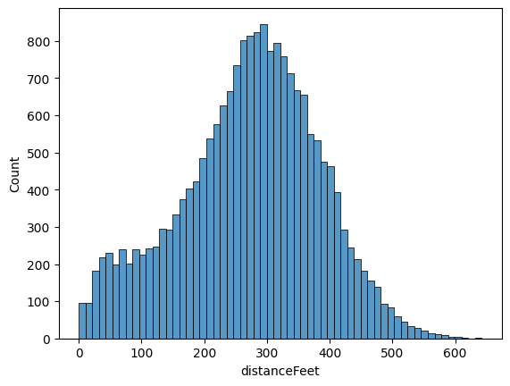
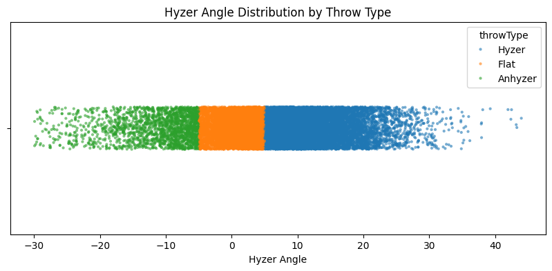
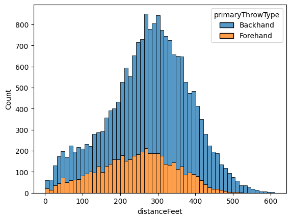
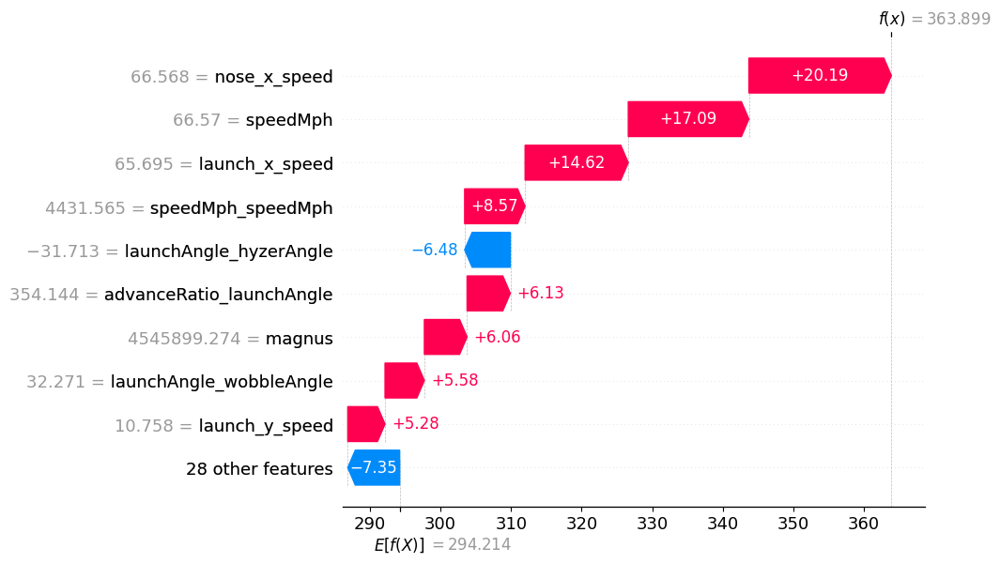
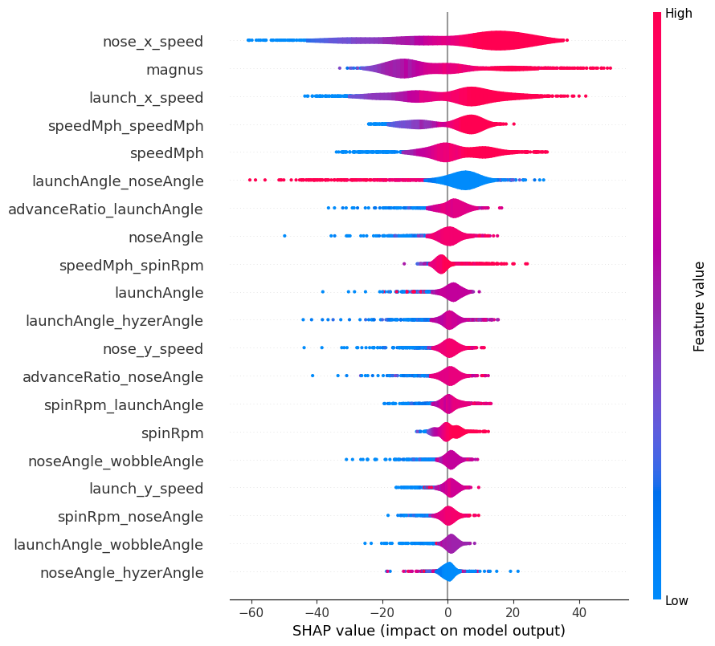
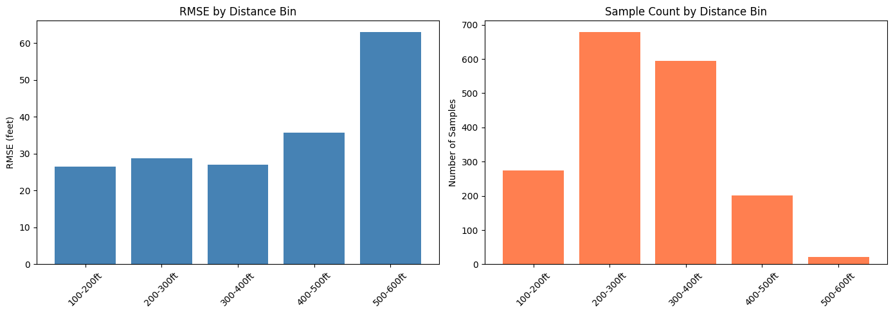

Frisbee Flight Forecasting
Reverse engineering TechDisc's flight calculator with machine learning
The TechDisc Conundrum
I've been playing disc golf consistently for around six years. I grew up playing golf, but eventually gravitated towards disc golf due to my disinterest in the pay-to-play model and general ineptitude at the sport. Disc golf, I've found, offers a lower barrier to entry and a more relaxed attitude than its traditional counterpart. More importantly, it's entirely unrelated to my professional interests in math and computer science. Almost no mathematics is required to play disc golf, aside from the simple arithmetic needed to tally up score at the end of a round.
I was content with this divide between interests. When I grew tired of grappling with a particular taxing math problem or software bug, I could enjoy the fresh air and physical activity by playing a round of disc golf. The activities were complementary and that's how I liked it.
It wasn't until the release of the TechDisc in early 2024 that these two worlds collided. On the surface, the TechDisc looks like an ordinary disc. Located on the bottom of the flight plate, however, is an array of telemetry sensors that collects in-flight data. These statistics are then relayed to the user's phone, which then gives a prediction for how far the disc flew. Paired with a throwing net, the setup allows players to receive instant feedback for each throw, without the hassle of having to pick up each disc.
The sales pitch was convincing, but I balked at the $300 price tag. It appears that the TechDisc is marketed towards the most dedicated of players, who painstakingly obsess over improving form. I don't fit that description, though I was still curious about one point: the distance calculation. TechDisc is understandably vague in describing their methodolgy, only mentioning that the data is passed to the cloud for "flight simulation".
Admittedly, I don't know much about physics. I took a singular course in mechanics years ago and remember precious little. What I do have, however, is a massive labeled dataset and a GPU.
It's practically the same thing.
Exploring the Data
As part of a marketing campaign, TechDisc had a vendor booth at many of the DGPT events this year. This allowed spectators to try the product out before committing to a purchase. This business decision is a great help to us, since these throws were made publicly available. After downloading most of the data from the past two years, I had a dataset of just under 20,000 throws.
TechDisc reports the following metrics:
- speedMph- self explanatory
- spinRpm- also self explanatory
- advanceRatio- metric used in propeller engineering, proportional to linear speed over spin
- launchAngle- angle of elevation when the disc is released
- noseAngle- angle of attack
- hyzerAngle- angle relative to the horizontal viewed behind the thrower
- wobbleAngle- angle relative to axis of orientation
- throwType- one of Flat, Hyzer, Anhyzer, Grenade, or Roller
- primaryThrowType- one of Backhand, Forehand, Tomahawk, Grenade, or Thumber
and, of course, the target variable distanceFeet. For those unfamiliar with disc golf terminology, these metrics are described in greater detail here. The first order of business is to look at our target variable's distribution:

This looks roughly normal, with most throws in the 250-350 foot range. The concerning part for our analysis is the left tail. There is a nontrivial amount of throws under 100 feet, significantly under normal distances. I can think of two reasons. The first is that, should a failure occur somewhere in the distance calculation pipeline, the app automatically returns a distance of zero.
The second, and more probable, reason is tomfoolery. When first throwing a TechDisc, most people throw normally for the first dozen or so shots. This inevitably degenerates into trying throws that no reasonable person would ever attempt, just to see what the app reports. Using the off-hand, throwing the disc upside-down, or shooting the disc like a basketball are some of the most popular examples. In either case, we ought to eliminate these outliers, as they may confuse our model.
The other prejudice we will exhibit is against overhand throws, grenades, and rollers. These all have fundamentally
differently flight paths than an ordinary throw and are seldom used. This leaves only forehands and backhands. With
this, we can eliminate the two categorical variables from our dataset. The first, throwType, is really
a proxy for hyzerAngle, as evidenced by the following cluster plot:

Our other categorical variable, primaryThrowType now only contains forehands and backhands. The flight
physics for these two throws are identical up to handedness; a lefty backhand flies the same as a righty forehand.
This makes the variable redundant, so there's no need to include it in our model.

Indeed, the distributions appear similar, with the height difference due to most players preferring backhand. With these two criteria, we perform the following preprocessing steps:
- Discard all throws that are neither forehand nor backhand
- Eliminate both categorical variables
- Remove all throws containing at least one of the following:
-
speedMph < 25 -
launchAngle <= -5 || launchAngle >= 25 -
hyzerAngle <= -45 || hyzerAngle >= 45 -
noseAngle >= 25 - Filter out any remaining throw under 100 feet, as to avoid equipment failure
The thresholds were determined based on histogram plots for each feature variable, as well as intuition I've gained through years of experience. As a result of preprocessing, 1,077 throws were discarded (about 5% of the dataset).
Model Baselines
Our primary goal is to develop a model that mimics that of the TechDisc as closely as possible. We'll reserve 10% of our data for testing and use RMSE for our scoring metric. Particularly, we aim for a RMSE of under 33 feet. This seemingly arbitrary number is the radius of C1, an invisible circle centered around the basket analogous to a golf green. Good players make a majority of putts inside this circle, so if our model predicts that our shot lands here, we'll call it a success.
As a warmup, let's train a couple of linear regression models with various regularization schemes. We'll use 5-fold cross-validation for selecting the best regularization coefficients. After normalizing the feature data, our best linear model has the following performance on the validation set:
cendres@MacBookPro tech-disc % python train_linear_model.py
model: LinearRegression()
reg_type: none
data_type: data/features.csv
val_rmse: 58.626450797228756
which isn't very awe-inspiring. As expected, this suggests that our relationship is nonlinear. The other baseline I had in mind were gradient-boosted trees, one of the most popular approaches in machine learning. Among other benefits, ensemble methods have been shown to learn interactions, something I expect to be of critical importance. Here's the training loop, complete with a randomized grid search for tuning hyperparameters:
# Per sklearn's suggestion, use HistGradient over standard GBR
# Mainly due to bucketing data, which helps with efficiency on big (>10k) datasets
def train_gradient_model(x_train, y_train):
# Monotonic constraints to guide model
MONO_CTR = {
"speedMph": 1, # higher speed -> more distance
"spinRpm": 1, # higher rpm -> more distance
"wobbleAngle": -1 # more wobble -> less distance
}
# Hyperparameter search space
param_dist = {
"learning_rate": np.logspace(-3, -1, 20),
"max_depth": [None, 10, 20],
"max_leaf_nodes": [None, 15, 30, 45],
"max_features": [0.5, 0.8, 1.0],
"min_samples_leaf": [10, 20, 40],
}
gbr = HistGradientBoostingRegressor(
monotonic_cst=MONO_CTR,
early_stopping=True,
loss="squared_error"
)
# Randomized search
random_search = RandomizedSearchCV(
estimator=gbr,
param_distributions=param_dist,
n_iter=200,
scoring="neg_root_mean_squared_error",
cv=5,
verbose=1,
n_jobs=-1
)
random_search.fit(x_train, y_train)
return random_search.best_estimator_, -random_search.best_score_
which yields much better results:
cendres@MacBookPro tech-disc % python train_gbr_model.py
model: HistGradientBoostingRegressor(early_stopping=True,
learning_rate=np.float64(0.06158482110660261),
max_depth=20, max_features=0.5,
max_leaf_nodes=None, min_samples_leaf=10,
monotonic_cst={"speedMph": 1, "spinRpm": 1,
"wobbleAngle": -1})
val_rmse: 37.748599895767974
Feature Engineering
Our ensemble model is getting close to our goal, but we still need to shave off a couple of feet. To do this, we'll explicitly create interaction terms in our dataset. For parsimony, we only consider interaction terms of the form $x_i \cdot x_j$ (i.e. the product of two features) There are three approaches to this:
- Add all $\binom{7}{2}-1 = 20$ interaction terms 1
- Add the most relevant interaction terms, as determined by LASSO feature selection
- Add the most relevant interaction terms, as determined by physical intuition
The first two options are rather straightforward, but the physics-inspired model is more nebulous. Here's the full list of interaction terms I choose for the physical model, along with brief explanations:
-
launch_x_speed = speedMph * cos(launchAngle)(horizontal velocity component) -
launch_y_speed = speedMph * sin(launchAngle)(vertical velocity component) -
nose_x_speed = speedMph * cos(noseAngle)(horizontal velocity component) -
nose_y_speed = speedMph * sin(noseAngle)(vertical velocity component) -
v0^2 = speedMph * speedMph(proportional to drag) -
magnus = v0^2 * spinRpm(proportional to Magnus effect)
For comparison's sake, here is what LASSO selected:
-
speedMph_speedMph = speedMph * speedMph -
launchAngle_launchAngle = launchAngle * launchAngle -
launchAngle_noseAngle = launchAngle * noseAngle -
speedMph_hyzerAngle = speedMph * hyzerAngle -
noseAngle_noseAngle = noseAngle * noseAngle -
advanceRatio_launchAngle = advanceRatio * launchAngle -
spinRpm_launchAngle = spinRpm * launchAngle -
spinRpm_spinRpm = spinRpm * spinRpm
We can rerun the previous two model selection experiments on our new datasets to see if there's any meaningful improvement. Indeed, we see a marked improvement in our linear model:
cendres@MacBookPro tech-disc % python train_linear_model.py
model: LinearRegression()
reg_type: none
data_type: data/features_with_all_interactions.csv
val_rmse: 46.72653112988375
This should come as no surprise, as, in absence of regularization, RMSE cannot increase when more features are added 2. How did the ensemble model fare?
cendres@MacBookPro tech-disc % python train_gradient_model.py
model: HistGradientBoostingRegressor(early_stopping=True,
learning_rate=np.float64(0.06158482110660261),
loss="squared_error", max_features=0.5,
max_leaf_nodes=None, min_samples_leaf=10,
monotonic_cst={"speedMph": 1, "spinRpm": 1,
"wobbleAngle": -1})
data_type: data/features_with_all_interactions.csv
val_rmse: 32.514629879792324
We have reached our goal, beating the required 33 ft target for RMSE. This, naturally, assumes that performance on the test set will be similar. But can we do better?
In both cases, the naive approach of using all interaction terms wins out. I still believe there is merit in some of the physics metrics, so I propose the final set of modifications:
- Replace
speedMph_noseAnglewithnose_x_speedandnose_y_speed - Replace
speedMph_launchAnglewithlaunch_x_speedandlaunch_y_speed - Add
magnus, which is the product of three feature variables
With these changes made, we perform one final training session to wring out better performance:
cendres@MacBookPro tech-disc % python train_gradient_model.py
model: HistGradientBoostingRegressor(early_stopping=True,
learning_rate=np.float64(0.1), max_features=0.5,
max_leaf_nodes=None, min_samples_leaf=10,
monotonic_cst={"speedMph": 1, "spinRpm": 1,
"wobbleAngle": -1})
data_type: data/features_with_new_interactions.csv
val_rmse: 32.40775557362076
It looks like our final addition was a wash, with only a negligible improvement. We'll just cross our fingers that this will be enough on the test set. Without further ado...
cendres@MacBookPro tech-disc % python eval_model.py
=== FINAL MODEL ===
Dataset: data/features_with_new_interactions.csv
Validation RMSE: 32.41
Test RMSE: 29.54
Our model hung on, performing even better on the test set!
Explanations
With our model frozen, our final goal is to provide explanations for our predictions. This can be a nontrivial task for some architectures, but tree-based models make this simple. We'll rely on SHAP values for generating explanations.
For the uninitiated, SHAP values serve as an approximation of Shapley values, a technique from cooperative game theory. Given a particular observation, the SHAP value is a signed number representing the contribution of a particular feature to the final output. An important property to note is that the sum of SHAP values across all features must be equal to the difference in the final output and baseline prediction 3.
Take the following forehand from current tour player (and TAMU DGC alumn) Chandler Kramer:

Our model's baseline prediction is around 294 feet, which can be seen at the bottom of the picture. For this particular flight, speed-based features dominate prediction. The top four features are based on velocity and add nearly 60 feet to the prediction. If we were to add all of the SHAP values together with the baseline, we would arrive at the predicted distance: 364 feet.
To get a better understanding of the entire dataset, we can take a look at a violin plot of SHAP values:

This is consistent with the waterfall plot we saw earlier. A couple of observations:
- Velocity once again dominates, accounting for four of the top five features.
- The Magnus effect is an important part of our model. Lift (or glide in disc golf parlance) is one of the four flight numbers used to describe discs, so this isn't too surprising.
- High values of
launchAngle_noseAngleare detrimental to distance. This would either involve throwing high and nose up or nose down at the ground, both of which are bad distance lines. -
wobbleAngleandhyzerAngleare the only two original features not to appear in the violin plot. The former I suspect is due to the self-stabilization of the disc when thrown at sufficiently high speeds. The absence ofhyzerAngle, outside the two interaction terms, is rather curious.
Retrospective
In actuality, Kramer's throw went 431 feet, so our model was a rather severe underestimate. This observation led to one final inquiry: how well does the model perform at different distance bins? After stratifying the test set by distance, I had the following plots:

For average throws (i.e. under 400 ft), the model does similarly across all bins. Performance sharply declines, with an RMSE of 63 feet in the final bin. The likely culprit can be seen in the right plot- lack of training data. 500+ feet is elite-level power, possesed by only a small percentage of disc golfers.
This imbalance could be remedied by oversampling, but it's obviously too late now. I am not terribly concerned about this deficiency, as I have no delusions of grandeur about my throwing ability. I seldom crack 400 feet, so breaking the 500 foot barrier is out of the question. Should I follow the model's guidance on shot selection, I will be rewarded with a putt just inside circle's edge.
It's the perfect distance to hit dead center cage.
□